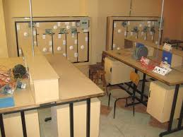
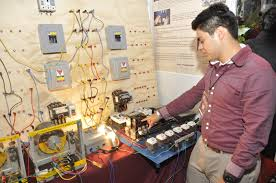

Carrera 2
Electricidad
La carrera de Electricidad ofrece las competencias profesionales que permiten al estudiante:
- Elaborar instalaciones electricas residenciales y comerciales.
- Reparar y dar mantenimiento a motores y generadores de corriente alterna y corriente continua.
- Mantener en operacion los circuitos de control electromagnetico y electronico.
- Mantener los sistemas de iluminacion y de energia renovable.
- Mantener instalaciones electricas de media y baja tension.
 